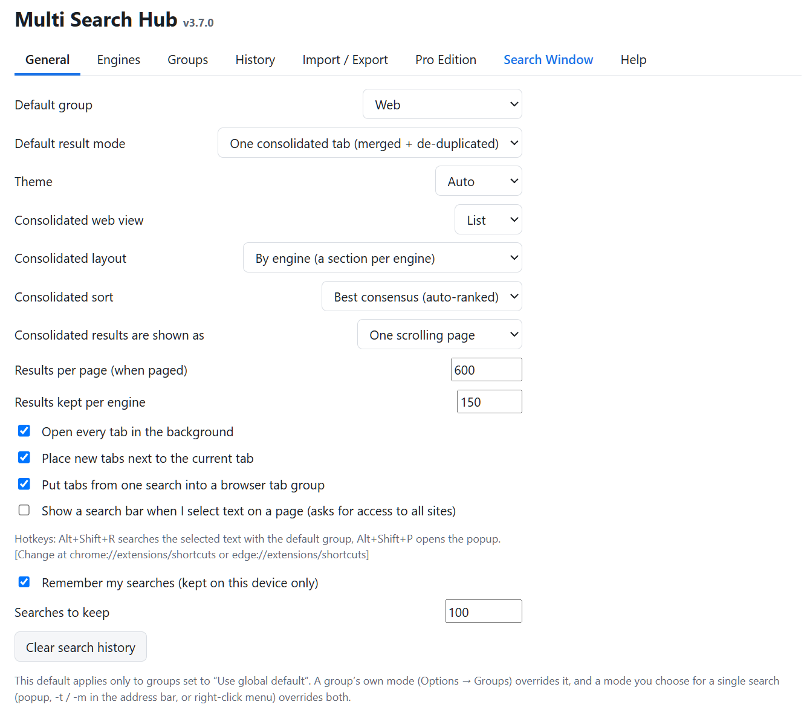

Search types and result modes
Choose Web, Images, Videos, or Images & video. Select consolidated mode for supported readers; use separate tabs only when explicitly desired. Independent organization and presentation controls let you compare providers.
Images and video results support visual Cards and compact List options, while media-specific metadata and thumbnails remain available.


Group defaults and presets
Group Manager separates Group Settings, Saved Engine Presets, and Search Engines. An active one-time search selection differs from a saved Current Group Default, Factory Default, or named preset.
For Multi-Group Search, pick each group and its own preset. Overlapping engine IDs should only be searched once. Use the section-level All Sub-Group Engines controls for temporary adjustments.


Engine readers and validation
Under Options → Engines, select Edit for an engine and configure URL templates using {q}, an optional fetch URL, and a parser. Parser selectors must match the returned HTML or JSON. A successful HTTP response does not mean usable results were extracted.
Privacy engines such as Startpage, Mojeek, and Qwant may return verification or blocked pages; manual-opening fallbacks are intentional. Finance readers marked via Bing perform site-restricted searches and validate final result URLs against the publisher domain. Never disable attribution checks simply to increase result counts.


Finance results and pagination
Finance & Markets includes Financial News, Market Data, U.S. Economics, International Economics, and Economic Calendars. Sources without verified readers appear in External Finance Sources with checkboxes for controlled tab opening.
Pro maximums are upper bounds, not guarantees. Bing-backed Finance pagination uses Bing result offsets while removing duplicate URLs and off-domain results. Distinguish extracted, verified, and displayed counts when diagnosing issues.
Credentials, history, and privacy
Optional saved sign-ins are encrypted under a user-provided master password and stay locked after browser restarts until unlocked. Never share that password or export credentials in plaintext.
History is local and optional in Pro. Use Recently Deleted confirmation controls for recovery or permanent deletion. Finance and other searches are sent to selected third-party sites, which apply their own policies.

Layout, storage, and backup
Use General to configure default group, theme, consolidation, result limits, tab placement, and history. The open Search Window updates its theme as settings change and can recover after an unpacked extension reload.
Export settings as JSON before any major update. Keep a rollback copy of the previous extension ZIP and avoid reinstalling the extension when upgrading its files.


Help and commands
The Chrome release-candidate keyword is hubp. After typing it in the address bar, press Space or Tab and enter a query or group keyword. Use -t for tabs and -m for consolidated mode when supported.
Open or focus the Search Window from the popup or Options. Use Options → Help for the current shortcut and search command reference.